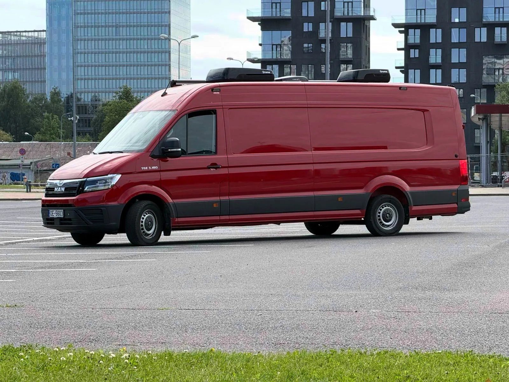
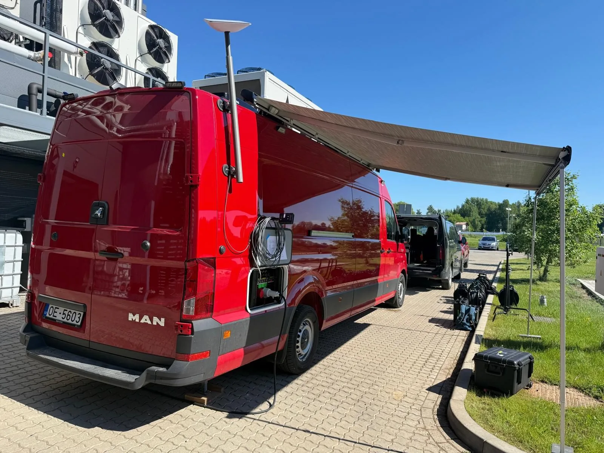
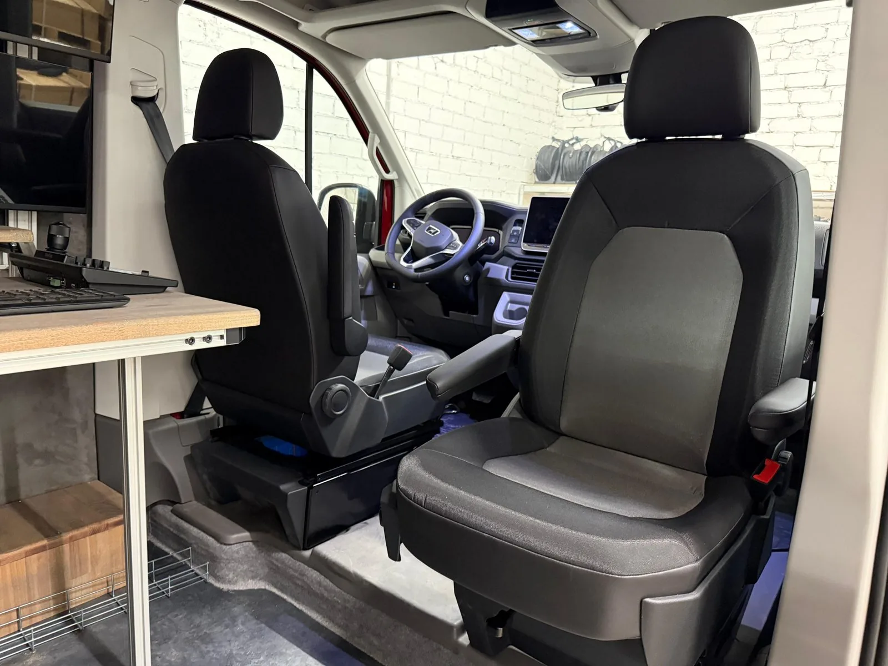
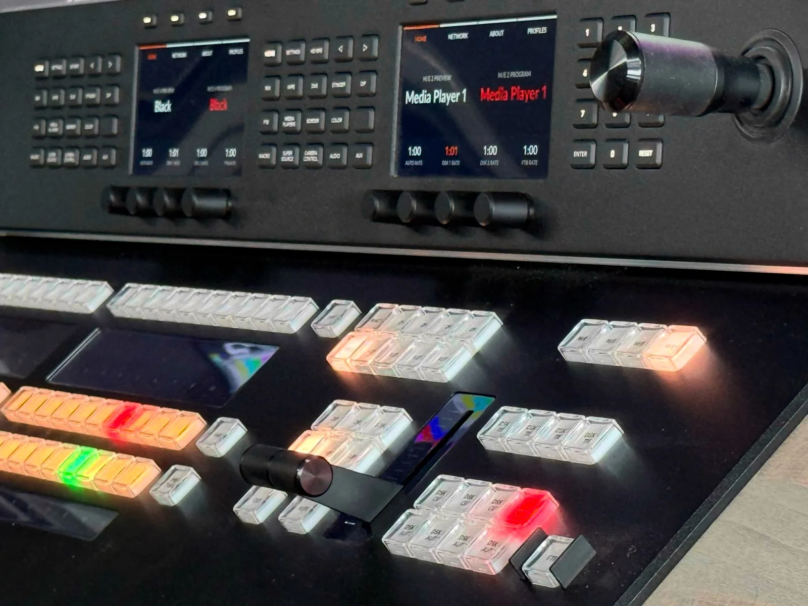
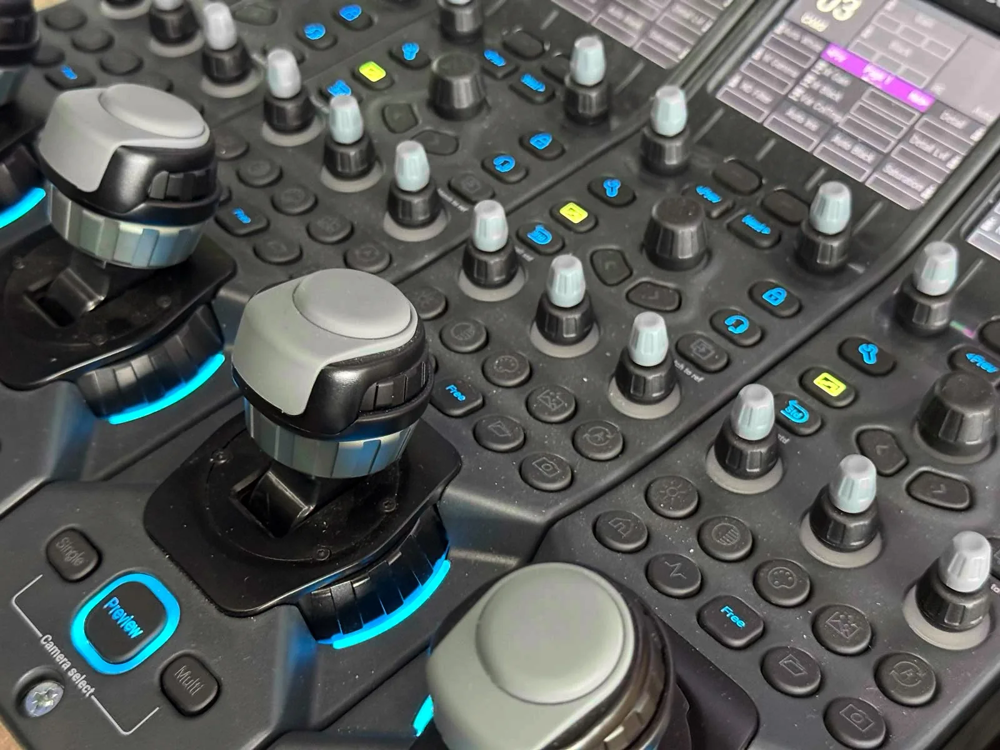
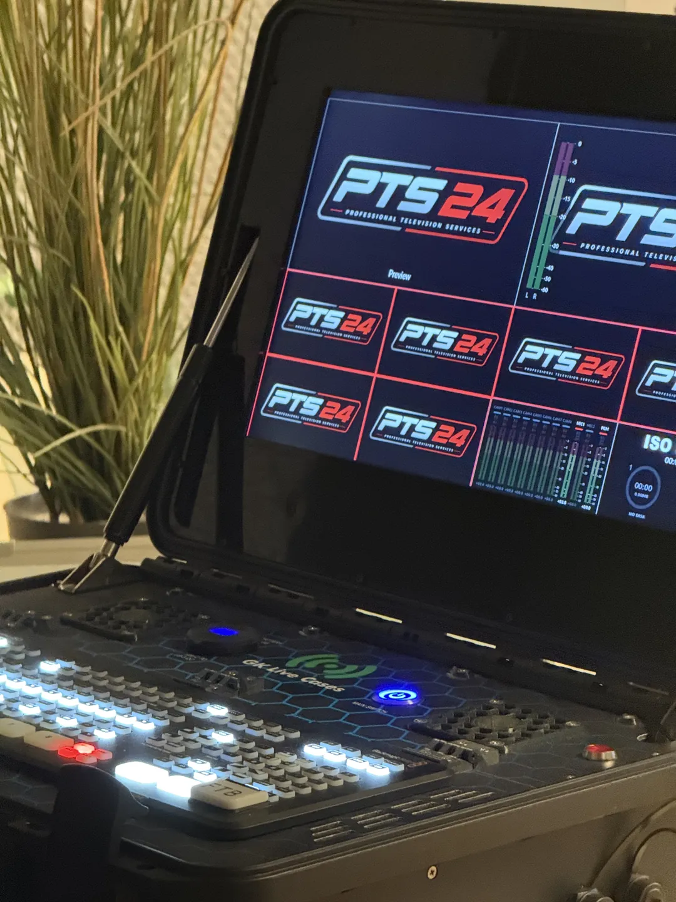

Tava pasākuma tiešraide. Raidījuma kvalitātē.
Pilnībā aprīkota mobilā televīzijas stacija — daudzkameru režija, grafika un pārraide jebkurā norises vietā.


Izbraukumā
KabīneBlackmagic ATEM 4 M/E Constellation 4K ar 40 12G-SDI ieejām un četrām M/E bankām. Komutācija no fiziskas broadcast pults — ATEM 1 M/E Advanced Panel 20.


Astoņas Grass Valley sistēmas kameras (LDX 92 un LDX 110), seši BirdDog X5 Ultra PTZ, līdz 12 Panasonic AG-CX350 un 4 × Sony PXW-Z90. Bezvadu RF risinājumi no DJI un Teradek.
Blackmagic Videohub 40×40 matrica sadala signālus starp kamerām, video pulti un ierakstu. Skaņu vada Behringer X32 Compact ar digitālo stagebox.
Standarta konfigurācija pilnvērtīgai daudzkameru producēšanai — ierakstam vai tiešraidei.
ATEM Constellation 4K + Advanced Panel 20. Tīrs un ISO ieraksts caur HyperDeck.
4 × LDX 92 + 4 × LDX 110 ar XCU stacijām un CGP500 vadību.
X32 Compact ar digitālo stagebox un EBU R128 skaļuma kontroli.
CasparCG un vMix iespējas.
LiveU LU600, Starlink un WebPresenter 4K straumēšanai.
GreenGo intercom (vadu + bezvadu), CCS-ONE tally un Videohub 40×40.
Darba mirkļi, aizkulises un tehniskais risinājums.
@pts_24_lv InstagramBāzes komplekts paplašināms ar moduļiem — pievieno tikai to, kas vajadzīgs.
Vēl LDX 92/110, BirdDog PTZ, Panasonic AG-CX350 vai Sony PXW-Z90.
DJI un Teradek risinājumi mobilam attēlam.
EVS lēnās kustības atkārtojumu sistēma.
Pieejamas iepriekš saskaņojot.
Super Panther III — sliede līdz 32 m, pilns aplis Ø6 m.
ABC krāns, 8 m garumā.
Papildu transports ar piekabi tehnikai.
LiveU LU300 kā rezerves enkoderis + Starlink vai šķiedras kanāls.
PTS Mini ir autonoma daudzkameru tiešraižu un ierakstu sistēma. Video režija, monitors un straumēšanas iekārtas ir kompaktā veidā iebūvētas vienā transportēšanas koferī, bet skaņas režija atrodas atsevišķā modulī. Sistēmas pamatā ir Blackmagic ATEM SDI Extreme ISO, kas ļauj pieslēgt un komutēt līdz pat 8 SDI kamerām.

Bāzes komplekta tehniskie parametri.
Signāls no norises vietas Latvijā sasniedz skatītājus jebkurā kontinentā dažu sekunžu laikā — pa LiveU bonded 5G, Starlink un RTMP/SRT straumēšanu uz jebkuru platformu vai CDN.
Galīgo konfigurāciju un cenu precizējam pēc īsas tehniskās apspriedes un norises vietas apskates.